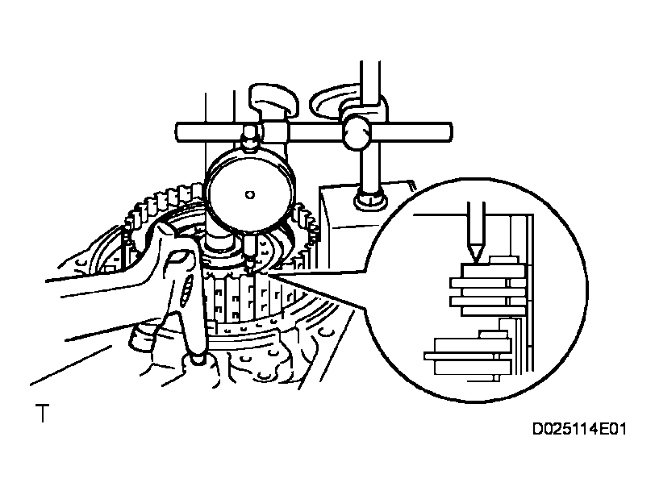
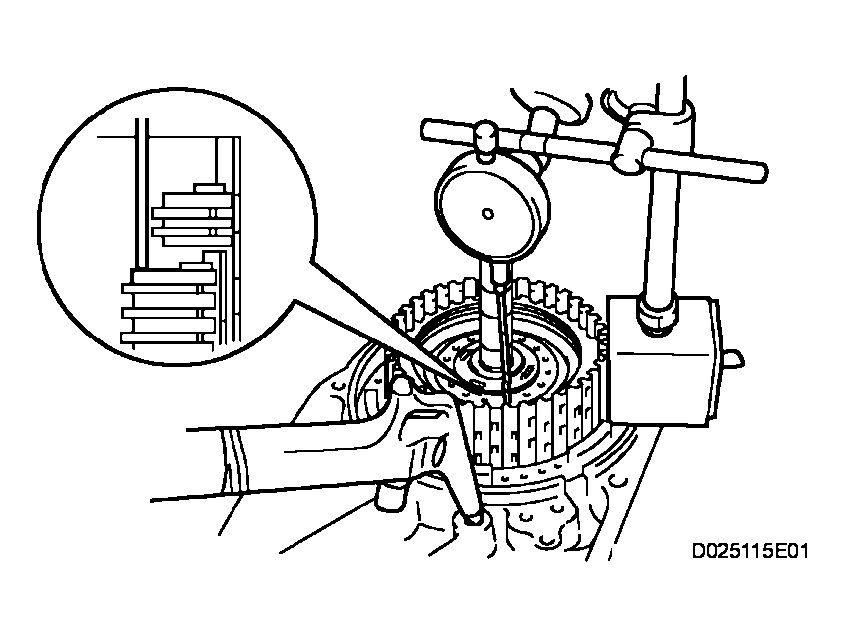

Intermediate Shaft: Reassembly
- INSTALL DIRECT CLUTCH DRUM O-RING
- Coat the 2 O-rings with ATF, and install it to the direct clutch drum.NOTE: Be careful not to damage the O-rings.
- Coat the 2 O-rings with ATF, and install it to the direct clutch drum.
- INSTALL DIRECT CLUTCH PISTON O-RING
- Coat the 2 O-rings with ATF, and install it to the direct clutch piston.NOTE: Be careful not to damage the O-rings.
- Coat the 2 O-rings with ATF, and install it to the direct clutch piston.
- INSTALL DIRECT CLUTCH DRUM SUB-ASSEMBLY
- Coat the direct clutch drum with ATF.
- Aligning the cutout in the intermediate shaft with the matchmark on the direct clutch drum, install the direct clutch drum to the intermediate shaft.NOTE: Be careful not to damage the O-ring and the lip of the clutch drum.
- INSTALL DIRECT CLUTCH PISTON SUB-ASSEMBLY
- Coat the direct clutch piston with ATF, and install it to the intermediate shaft.NOTE: Do not damage the O-ring of the direct clutch piston.
- Coat the direct clutch piston with ATF, and install it to the intermediate shaft.
- INSTALL DIRECT CLUTCH RETURN SPRING SUBASSEMBLY
- Install the direct clutch return spring on the direct clutch piston.
- Place SST on the piston return spring and compress the springs with a press.
SST 09387-00020
- Using a snap ring expander, install the snap ring from the direct clutch drum.NOTE:
- Stop the press when the spring sheet is lowered to 1 to 2 mm (0.039 to 0.078 in.) from the snap ring groove, preventing the spring sheet from being deformed.
- Do not expand the snap ring excessively.
- INSTALL DIRECT CLUTCH DISK
- Coat the 3 plates, 3 discs and flange with ATF, and install them to the intermediate shaft.
- Install the snap ring.
- INSTALL REVERSE CLUTCH DISC
- Install the 2 plates, 2 discs and flange.
- Install the snap ring.
- INSPECT PACK CLEARANCE OF REVERSE CLUTCH
- Install the forward reverse clutch and thrust needle roller bearing on the transaxle rear cover.
- Using a dial indicator, measure the reverse clutch pack clearance while applying and releasing compressed air (392 kPa, 4.0 kgf/cm2
, 57 psi).

Courtesy of © TOYOTA, LICENSE AGREEMENT TMS1002Standard pack clearance: 0.86 to 1.26 mm (0.0339 to 0.0496 in.)
If the pack clearance is less than the limit of pack clearance, parts may have been assembled incorrectly. Check and reassemble.
If the pack clearance is non-standard, select another flange.
HINT:
There are 4 flanges with different thickness.
Standard flange thickness
STANDARD FLANGE THICKNESS SPECIFICATIONSNo. Thickness No. Thickness - 3.0 mm (0.118 in.) 2 3.4 mm (0.134 in.) 1 3.2 mm (0.126 in.) 3 3.6 mm (0.142 in.)
- INSPECT PACK CLEARANCE OF DIRECT CLUTCH
- Install the direct and reverse clutch and thrust needle roller bearing on the transaxle rear cover.
- Using a dial indicator and measuring terminal (SST), measure the forward clutch pack clearance while applying and releasing compressed air (392 kPa, 4.0 kgf/cm2
, 57 psi).
SST 09350-36010

Courtesy of © TOYOTA, LICENSE AGREEMENT TMS1002HINT:
The direct and reverse clutch will come out as you apply the compressed air. Therefore, while the checking is being done, press on the input shaft of the direct and reverse clutch using a stamping machine or equivalent so that the pressure is not applied on the direct and reverse clutch.
Standard pack clearance: 0.62 to 1.02 mm (0.0244 to 0.0402 in.)
If the pack clearance is less than the limit of pack clearance, parts may have been assembled incorrectly. Check and reassemble.
If the pack clearance is non-standard, select another flange.
HINT:
There are 4 flanges with different thickness.
Standard flange thickness
STANDARD FLANGE THICKNESS SPECIFICATIONSNo. Thickness No. Thickness - 3.0 mm (0.118 in.) 2 3.4 mm (0.134 in.) 1 3.2 mm (0.126 in.) 3 3.6 mm (0.142 in.)